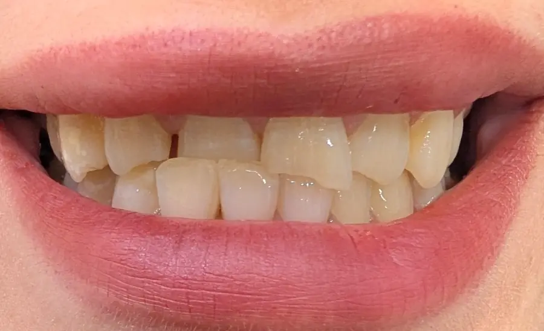

نسخه استخراجشده؛ ترجمه یا تأیید علمی انجام نشده است. وضعیت: captured
بیمار چند ماه پیش ضربهای به ناحیهی قدامی ماگزیلا خورده است. آن ضربه بخشی از دندانها را غیرقابل نگهداری کرده؛ از جمله سانترال راست بالا که ریشهاش بر اثر ضربه از استخوان خارج شده و اندیکاسیون کشیدن دارد. اما علت اصلی مراجعهی امروز تعیین تکلیف زیبایی سانترال چپ بالاست.

سانترال چپ بالا شکسته است. آنچه کیس را پیچیده میکند، دندان قدامی پایین مقابل است: با از دست رفتن آنتاگونیست سوپرااراپت شده و وارد فضای شکستگی و فضای رستوریتیو شده؛ یعنی بخشی از فضای لازم برای بازسازی سانترال بالا را اشغال کرده است.
گاهی پیچیدگی یک کیس از خود ضایعه نمیآید، بلکه از حرکتی میآید که در نبود آنتاگونیست در قوس مقابل اتفاق افتاده.
راهحل لزوماً در همان قوسی نیست که مشکل در آن دیده میشود. وقتی شدت مشکل کم است، کمتهاجمیترین مسیر، حتی به قیمت تقسیم اصلاح بین دو قوس، اغلب بر یک راهحل بزرگتر تکقوسی ارجح است؛ مشروط بر اینکه پایداری نتیجه با یک کانتکت کنترلشده تضمین شود.
نوع سؤال: ساخت کلمه · 4 خانه
حروف منبع: ا · ی · س · پ